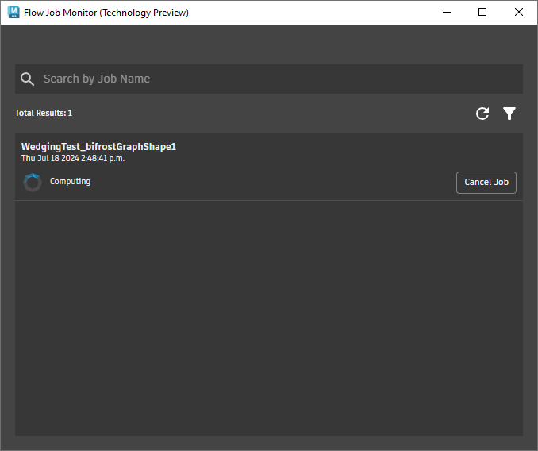

Flow Job Monitor
“Flow Job Monitor”显示最近楔形化处理和其他流作业的状态。
打开“Flow Job Monitor”
- 选择“Flow Graph Engine > Flow Wedging (Technology Preview) > Open Job Monitor”或“Flow Graph Engine > Open Web Monitor”（需要在 Web 上进行 Autodesk 登录）。

| 界面 | 描述 |
|---|---|
| Search by Job Name | 键入以查找特定作业提交并跟踪其状态。 |
| “Refresh”图标 | 刷新正在进行的作业的显示状态。 |
| “Filter”图标 | 按各种方式对列表进行排序。 |
| Job Status | Scheduled 作业已记录，但尚未开始。 Computing 作业正在处理并执行重新拓扑操作。 Downloading 某些文件已准备就绪，已开始自动下载。 Canceled 您取消了操作。您无法重新启动已取消的作业，必须提交新作业。 Failed 作业未完成。单击“View Details”以获取详细信息。 Completed 作业已成功完成。 |
| “Cancel Job”按钮 | 取消正在进行的作业。 |
| “Cancel Download”按钮 | 停止下载文件。 |
| “Download”按钮 | 手动下载已完成的作业。可以选择图表的作业端口中最初指定的位置以外的位置。（不适用于“Flow Web Monitor”。） |
| “Delete Job”按钮 | 从列表中删除作业及其关联文件。 注意：要手动清理下载的文件，请导航到本地磁盘上的下载位置。 |
单击作业可查看更多详细信息，例如特定楔形和帧的状态、作业日志等。单击“All Jobs”可返回到主列表。